Вітальня · журнал «ДентАрт» 2019 №2
Сергій Радлінський: «Стоматологія майбутнього – чим здоровіші зуби пацієнта, тим краще стоматологові!»
Розмовляла Ганна Антипович,журнал «ДентАрт» (м. Полтава, Україна)
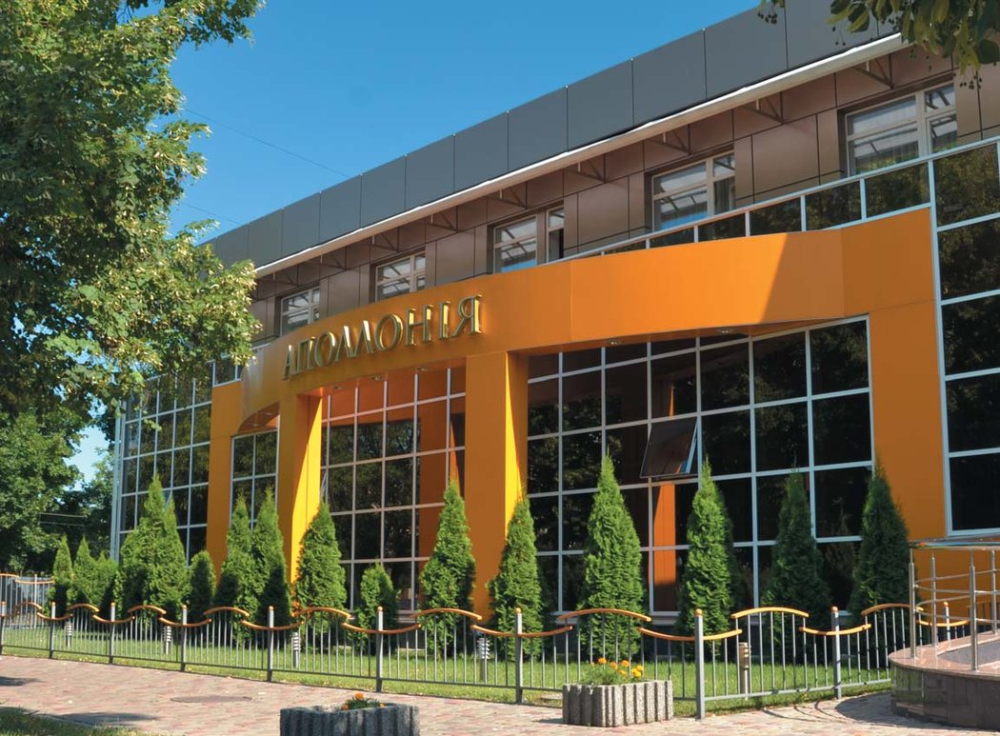
Завдяки клініці-студії «Аполлонія» і її засновникові, головлікареві Сергієві Радлінському Полтава стала меккою реставраційної стоматології. 2019 рік для клініки «Аполлонія» і автора біоміметичного методу реставрації зубів, маестро стоматології Радлінського чотирижди ювілейний. Тож у Вітальні «ДентАрту» Сергій Володимирович Радлінський, головний редактор нашого журналу, перший президент Української академії естетичної стоматології, почесний професор УМСА, почесний доктор Тбіліського державного медичного університету і Кишинівського університету медицини і фармації, афільований член EAED, член ICD та IAAD, ділиться споминами про шлях становлення флагмана української і світової реставраційної стоматології та поглядами на майбутнє галузі.
«У нашого проекту було три творці»
– Шановний Сергію Володимировичу, ювілеї у світі стоматології – не дивина, але щоб в один рік та стільки знаменних дат для клініки і її засновника – таке буває нечасто...
– Справді, 2019 рік для клініки-студії «Аполлонія» дуже знаменний. Так склалося, що знаковим подіям на шляху її становлення 10, 20, 30, 40 років. Такого спеціально ніхто б не придумав. Цьогоріч у березні виповнилося 10 років, як ми всі – клініка, навчальний центр і журнал «ДентАрт» – вселилися у Будинок Аполлонії. Але самому бренду клініки-студії «Аполлонія» вже 20 років. Це окрема дуже цікава історія.
А 30 літ тому, 1 вересня 1989 року, ми зустрілися з компанією «Дентсплай». І нарешті моє особисте, але те, стало основою проекту, в якому ми живемо і працюємо, якого потребують наші пацієнти, котрі приїжджають з усієї України й інших країн, щоб отримати специфічну стоматологічну допомогу – прямі реставрації, художні реставрації, а також лікарі-стоматологи – щоб побачити наш досвід і щось для себе запозичити: 40 років тому я став дипломованим стоматологом і одержав направлення на роботу на кафедру стоматології дитячого віку Полтавського медичного стоматологічного інституту (нині Українська медична стоматологічна академія).
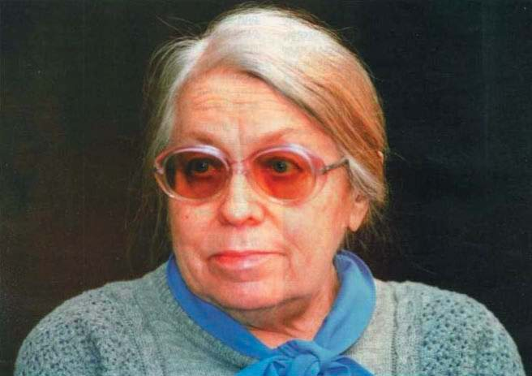
Моєю спеціалізацією на кафедрі і в дитячій стоматологічній поліклініці були реставрації поламаних зубів у дітей після травм, мета яких – зберегти простір у зубному ряду для наступного протезування у зрілому віці. Зуби дуже легко ламаються тоді, коли вони тільки прорізалися і ще слабко мінералізовані. Їх корені після прорізування ще ростуть протягом п’яти років. У цей час зуби дуже вразливі до травм. Якщо перелом зуба відбувся так, що втрачений контакт між зубами, то в 10-11 років прорізуються ікла і зсувають зуби між собою, позбавляючи в майбутньому простору для нормального протезування. І мені треба було за допомогою композиту зберегти цей простір, відбудувавши контакт. Якщо у Львові тоді в таких випадках ставили парапульпарні штифти, щоб утримати реставрацію на зубі, у Москві ставили металеві коронки, то ми це робили менш інвазивно, більш природньо.
– І який композит Ви тоді використовували?
– Перший матеріал – чеський Евікрол. У 1985 році я мав республіканське впровадження цієї технології, схвальні відгуки з усієї України. Все ніби добре, але була одна велика проблема. Ми жили в Радянському Союзі, де всіма галузями життя правила Комуністична партія. І заборонялось писати наукову роботу про лікувальні технології, де використовуються імпортні матеріали.
І ось, читаючи газету «Известия», я побачив невеличку замітку, що якась фірма «Дентсплай» планує разом із Всесоюзним науково-виробничим об’єднанням «Стоматологія» у Харкові на базі заводу медичних пластмас і стоматологічних матеріалів створити підприємство з випуску сучасних композитів.
Я цю замітку відразу поніс моєму керівникові, професорові Лії Петрівні Григор’євій. Вона щось писала, як завжди у кожну вільну хвилину між лекціями. Кажу: «Ліє Петрівно, ось повідомляють, що в Харкові буде завод композитних матеріалів». Вона на мить відірвалася від роботи, прочитала інформацію, віддала газету, знову налаштувалася писати, а мені каже: «Ура, тепер цей фрагмент включимо в дисертацію!»
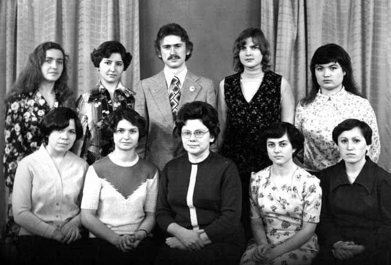
Ось так на обрії мого життя вперше з’явилася фірма «Дентсплай». Потім у тій же газеті я прочитав, що німецька фірма «Медіпарт» (створена для торгівлі з СРСР, як я дізнався потім) представляє відому фірму «Дентсплай» на першій виставці у Москві 1 вересня 1989 року. Ясна річ, потрібно було поїхати на цю виставку, познайомитися з представниками фірми, бо тоді не можна було просто з’явитися на завод і запропонувати співпрацю чи купити композит.
Наші розробки, наші плани підтримував ректор Полтавського медичного стоматологічного інституту професор Микола Сергійович Скрипніков, теж мій наставник і в громадській роботі, і у професійній сфері. До нього чимало людей приходило з різними ідеями, але він побачив саме в нашій ідеї створення центру для навчання реставрації сучасними композитами якесь зерно. Тому виписав мені і студентові Володимиру Новікову відрядження на ту дентсплаївську виставку.
Ми приїхали, я нікого ще не знав з фірми «Дентсплай», але знав професора Валерія Костянтиновича Леонтьєва, який очолював науково-виробниче об’єднання «Стоматологія», тож передав йому вітання від ректора нашого медичного стоматологічного інституту і сказав, що хочемо запропонувати «Дентсплай» створити у Полтаві навчальний центр, де стоматологи оволодіватимуть технологіями роботи з композитами. А він каже: «Ми все це вже продумали. У нас буде мережа навчальних центрів по всьому Союзу, куди стоматологи приїжджатимуть на навчання, а після курсів купуватимуть матеріали і їхатимуть додому працювати по-новому». Тобто він говорив про те, що «Дентсплай» назвав пізніше «продажем через навчання».
– Де відбувалася та пам’ятна для Вас виставка?
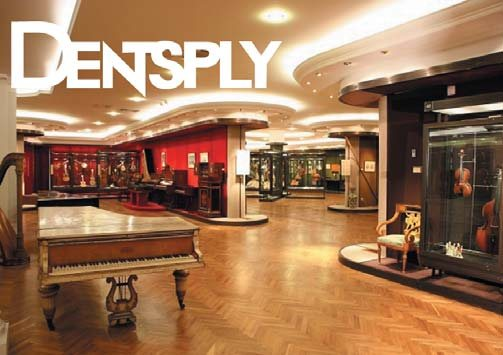
– Урочисто відкривали її не в якомусь стоматологічному центрі чи інституті, а на останньому поверсі Музею музичної культури імені Глінки, і в цьому, як виявилося, теж був знак з небес. Ми піднімалися сходами, там був такий атріум, згори лилося світло, а на сходовому майданчику другого поверху квартет грав чудову музику, і віолончель вела соло, налаштовуючи душу на високе, прекрасне... Мине зовсім небагато часу, і зубаста віолончель стане емблемою і наших семінарів, курсів, «Призма-чемпіонату», і журналу «ДентАрт»...
Виставку відкривали професор Леонтьєв і віце-президент «Дентсплай» Чарльз Кін. Познайомилися ми і з Яном Ваттом, директором «Дентсплай». Розповіли йому, що у Полтаві є всі можливості відкрити навчальний центр для роботи з композитами. Щойно закінчилося будівництво гуртожитку на вулиці Кагамлика, і ректор медстоматінституту готовий надати під такий центр приміщення на першому поверсі – 700 квадратних метрів. І Ян Ватт сказав: «Згода!» І ми поїхали додому, окрилені і сповнені ентузіазму.
Отже, у нашого проекту було три творці: Полтавський медичний стоматологічний інститут, фірма «Дентсплай» і, звичайно, ми самі, група ентузіастів, готова створити навчальний центр.
– Так, мабуть, і створюється більшість успішних проектів у світі: є потреба в чомусь новому, є люди, котрі це нове уособлюють, і добре, якщо в уже існуючих суспільних структурах є люди, здатні усвідомити потрібність цього нового і підтримати ініціативу.
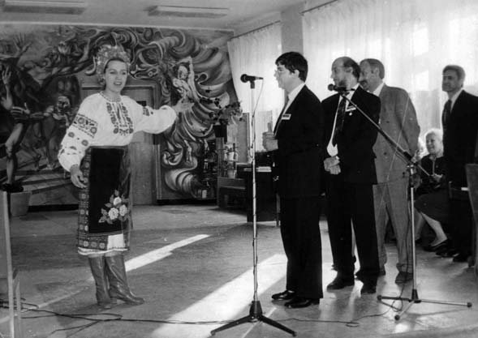
«У назві «Комподент» поєдналися два слова – композит і зуб»
– Чи були на шляху становлення перешкоди?
– Ще й які. І найприкріше, що на самому початку. Ми будували свої наполеонівські плани, ходили у Міськбудпроект, цікавилися вартістю проектування сучасної клініки, яку заснуємо спільно з фірмою «Дентсплай». Але Ви знаєте, скільки чиновницьких перешкод було на шляху перших кооперативів, спільних підприємств у ті часи. «Дентсплай» той завод у Харкові будував-будував, та не просто в Харкові, а під Харковом на болотах, та не просто на болотах, а ще й у місцевості, яка називалася Безлюдівкою, і зрештою щось там із задекларованою співпрацею загальмувалося, і коли я знову зустрівся з Яном Ваттом, то почув: «Навчання роботі з матеріалами «Стомадент» – це проблема «Стомадента». Нас це не цікавить».
Так наші мрії, ентузіазм розвіяла сувора дійсність. Але Ян Ватт познайомив нас із директором з американської сторони спільного підприємства «Стомадент» Реядом Залзалою. Гарний менеджер, він дав нам цінні поради. І в січні 1990 року я одержав листа від пана Залзали із запрошенням купити їхню продукцію.
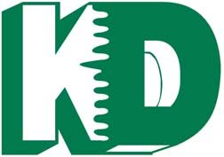
Цей день назавжди залишився в моїй пам’яті. Я щойно приїхав із Запоріжжя, де наші студенти були на практиці, прочитав того листа – і в дорогу. Як хочеться нарешті спробувати новий композит своїми руками! Приїхав у Харків зранку і цілий день протовкся на заводі «Стома», збираючи сім підписів по різних кабінетах, і нарешті мені сказали: «У нас тут матеріалу немає, їдьте на завод на Безлюдівку». Туди жоден транспорт не ходив. Приїхав я тролейбусом до аеропорту, а далі пішки кілька кілометрів болотами в заметіль... І коли перед завершенням робочого дня я доплугалися таки на підприємство, весь обліплений снігом, а мене зустрічає Реяд Залзала з перекладачем Тетяною Корнейко, пригощають кавою, тепло спілкуються, і композити, які я замовив, уже дбайливо запаковані, перев’язані, ще й ручка до коробки прив’язана, щоб зручно було нести, а на автовокзал мене люб’язно підвіз на «Мерседесі» сам директор, – я одержав перші уроки сучасного бізнес-ставлення до споживача, покупця, можливого партнера.
– Ви працювали на кафедрі стоматології дитячого віку. А як поринули в дорослу стоматологію?
– Досвід реставрацій композитом, який ми мали, наші наробки, безперечно, були важливі для стоматології дитячого віку, але я зрозумів, що ще потрібніші наші технології для стоматології «дорослої», яка врешті мала попрощатися з амальгамою, із видаленням зубів, якого можна і треба уникнути.
Ми давали рекомендації, як застосовувати композит, значно розширивши рамки існуючих тоді показань. Так склалася наша плідна співпраця із СП «Стомадент». Завдяки знайомству з обладнанням їхньої лабораторії, приміром, Володимир Новіков зміг написати наукову роботу про те, як забарвлюються композити кавою і чаєм, виступав з нею на студентській науковій конференції (я був науковим керівником).
І ось уже такий пам’ятний для українців 1991 рік, і наближається ювілей Полтавського медичного стоматологічного інституту. Ми запропонували серед ювілейних заходів провести семінар «Реставрація матеріалами «Стомадент». У нас уже були певні напрацювання, ми мали слайди до і після реставрації, тож мали що показати. На цей семінар, який відбувся 30 вересня 1991 року, приїхали учасники з різних країн, прибув і Ян Ватт від «Дентсплай».
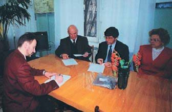
Учасникам семінару сподобалася і програма, і те, як їх зустрічали – українською піснею, хлібом-сіллю. Ми влаштували і першу свою виставку. Ця колекція реставраційних матеріалів і ламп залишилася нам на знак вдячності за наші зусилля.
Ясна річ, усе це нас тішило і спонукало до того, щоб зареєструвати наш навчальний центр. Так з’явився «Комподент». У назві поєдналися два слова: композит і зуб. Я придумав під це особливу емблему. (Згадаю, до речі, що у радянські часи з емблемами було непросто. Коли я придумав емблему для значка з’їзду стоматологів, присвяченого профілактиці стоматологічних захворювань, – силует богині здоров’я Гігіеї, то, як зізнавався пізніше наш наставник, корифей української стоматології професор Павло Тихонович Максименко, науковий редактор журналу «ДентАрт», його разів десять викликали у міськком партії, щоб пояснив, чому це на емблемі з’їзду стоматологів богиня, а не якийсь радянський символ). Емблема «Комподенту» була дуже простою і символізувала з’єднання композиту з протравленою емаллю.
Ось так 3 березня 1992 року народився «Комподент». Керівництво «Дентсплай» цікавилося нашим досвідом роботи з композитами і запропонувало нам виступити в Ризі, але, ясна річ, уже з їхніми матеріалами. Це був Прізма Ей Пі Ейч – перший універсальний матеріал, який можна було застосовувати завдяки його міцності – на бокових зубах, а завдяки гарній полірованості, естетиці – на передніх. Потім він став Ті Пі Ейч – тобто тотального застосування. І всі компанії у світі перейшли на універсальні гібриди.
У жовтні 1992 року навчальний центр «Комподент» прийняв перших двох курсанток. Приміщення для курсів використовували Клубу знавців «Що? Де? Коли?» Це була така інтелектуальна гра, яку ми організовували з Наталею Синіциною, нині директором клініки-студії «Аполлонія», а тоді – директором книжкового магазину. Ми виступали і на центральному телебаченні, і на міжнародних змаганнях ерудитів, у команді були практично самі лікарі, тож невипадково у Клубі знавців і виросло покоління, яке склало кістяк «Комподенту».
– А де вели прийом пацієнтів?
– Спочатку виручало крісло на станції «Швидкої допомоги». Воно використовувалося лише вночі для допомоги у разі травми чи гострого болю, а вдень приходили ми, працювали як навчальний центр, і до 20-ї години мали піти, як наче нас тут ніколи й не було. Іноді приходили зранку і бачили, що стіна забризкана кров’ю. Тож було там не зовсім зручно, та невдовзі і звідти нас попросили. Нас приймали то дитяча стоматполіклініка, то новостворена кафедра післядипломної освіти на чолі з професором Таїсою Петрівною Скрипніковою, моєю «класною мамою» в минулому. Перший власний кабінет обладнали в готелі «Полтава». Це було зручно, бо пацієнти і курсанти мали де жити. А ми від самого початку працювали з пацієнтами і стоматологами з різних країн. Було, що до нас на курси приїхав сам професор Боровський з Іриною Макеєвою (нині вона професор, декан стоматфакультету). Через рік після навчання в Полтаві Ірина захистила докторську дисертацію і видала книгу на тему реставрації зубів світлополімерними матеріалами. Наш досвід був затребуваним, мене запрошували у ЦНДІС, щоб передав його тим, хто має викладати у навчальних центрах.
– Тоді Ви започаткували ще одну дивовижну справу – Призма-чемпіонат...
– Коли ми стали працювати як навчальний центр «Комподент», то відчули, що потрібен зворотний зв’язок з колегами, котрі приїжджають до нас на курси. Треба бачити, як реалізовуються одержані знання, зрозуміти, що ще слід внести в програму курсів. Так і народився «Призма-чемпіонат». Перші змагання стоматологів у художній реставрації зубів відбулися 1994 року.
Також ми багато їздили з лекціями по Україні, виступали безкоштовно в обласних стоматологічних поліклініках – це був свого роду волонтерський рух. А щоб інформація від нас і зворотна від колег була інтенсивнішою і ґрунтовнішою, заснували «ДентАрт» – міжнародний журнал про науку та мистецтво у стоматології. 1995 року вийшов перший номер, а з 1996-го часопис уже виходить регулярно як щоквартальник (Ян Ватт, до речі, хоч і на пенсії, але читає наш журнал «ДентАрт», отримує його електронну версію). Наступного року восени має вийти соте число часопису. Редакція готується до цього своєрідного ювілею...
– Отже, в середині 1990-х ви вже працюєте матеріалами «Дентсплай». А обладнання?
– Обладнання було «Сірони». Ніхто тоді, ясна річ, не знав, що ці дві фірми через багато років об’єднаються. Але ми вже тоді визначили, що саме матеріали «Дентсплай» і обладнання «Сірона» дають можливість справді сучасної, мінімально інвазивної, високоестетичної роботи.
А життя ставило нові вимоги. Коли ми орендували в готелі вже 7 номерів, а коридор однак був спільним, ми зрозуміли, що пора робити щось своє. Було вже чимало пацієнтів, які в нас вірили, які підтримували нас своїми коштами, і ми запланували свою клініку.
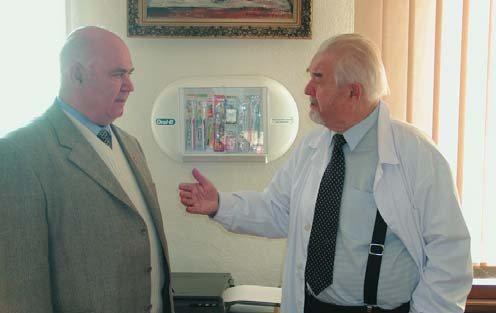
«Аполлонія, яку не пустили на з’їзд, назавжди оселилася у Полтаві»
– Як виникла ідея назвати клініку іменем покровительки стоматологів Святої Аполлонії?
– 1999 року мав відбутися перший з’їзд новоствореної Асоціації стоматологів України. Я був членом правління Асоціації, і Микола Федорович Данилевський, корифей української стоматології, попросив мене розробити емблему з’їзду. Ми вже в журналі на той час опублікували життєпис Аполлонії, і мене буквально осінило: виповнюється 1750 років від дня смерті мучениці, це 7 разів по 250 років. Тож на емблемі з’їзду має бути вона, та, що з легкої руки П’єра Фошара стала покровителькою стоматологів. Професорові Данилевському ідея сподобалася. Я мав кому доручити цю роботу, наш старший син Володимир навчався у Києві в Академії образотворчого мистецтва і архітектури, на факультеті вільної графіки. Він створив цю емблему за мотивами книжкової мініатюри з «Часослову Катерини Клевської». (До речі, вже й картина із зображенням Святої Аполлонії висіла у нас, очікуючи на нову клініку).
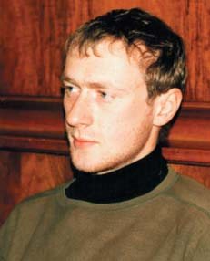
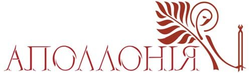
І ось збирається координаційна рада АСУ, через півроку з’їзд, потрібно затвердити емблему. Я доповідаю, усі захоплені, Данилевський радісно потирає руки. Починається обговорення... А на той час саме була реабілітована греко-католицька церква, і ті храми, які повідбирали у вірян цієї церкви після Другої світової і віддали Московському патріархату, тепер мали повернутися законним власникам, живі були люди, які їх будували. Почалися релігійні сутички. І професор Ніна Іванівна Смоляр встала і сказала: «Ви не розумієте. Це католицька свята. У нас буде багато проблем. Є емблема АСУ – хай вона і буде емблемою з’їзду». Запала могильна тиша. Емблему не затвердили. Ми розробили іншу – з Володимирською гіркою, князем Володимиром…
– Але ж у роки, коли Аполлонія вчинила свій подвиг Віри і за те її, вирвавши всі зуби, спалили, церква не була поділена на католицьку і православну... Це станеться аж через вісім століть...
– Члени правління тоді побоялися якихось провокацій. До речі, як сказала профессор Алла Мазур, нині є проблема з емблемою АСУ: Міжнародний Червоний Хрест уже два позови подав про порушення авторських прав – ніхто не має права використовувати хрест червоного кольору у своїх емблемах.
Отож, з’їзд відбувся, а емблема з Аполлонією не була затребувана. Тим часом усі наші думки були про нову клініку, котра, якщо йти за її реєстраційним ім’ям як підприємства, мала називатися Приватне підприємство «Стоматологічна фірма «КомпоДент-Арт». Спробуйте це запам’ятати! А тут чудове ім’я Аполлонія, звучне, є історія подвижництва і нескореності, вона вважається покровителькою не лише пацієнтів, як святий Антипа, а й стоматологів, відколи П’єр Фошар започаткував у Парижі сучасну стоматологію і взяв це ім’я як прапор, як символ нашої професії. Ми порадилися з православними священниками, і вони не бачили ніякого гріха в тому, що ми назвемо клініку-студію іменем Святої Аполлонії, подвижниці тих часів, коли християнство ще не зазнало розколу.
І до цього часу наша клініка та навчальний центр як підприємство зареєстровані під назвою «КомпоДент-Арт», а клініка-студія «Аполлонія» – наш зареєстрований бренд, захищений авторським правом. І йому цьогоріч виповнилося 20 років. Ось так Аполлонія, яку не пустили на з’їзд стоматологів, назавжди оселилася у Полтаві.
– Удосконалюються технології, матеріали... А що залишається незмінним?
– Передусім – пацієнтоцентричний підхід. Усі, хто до нас приїжджає уперше, запитують, чому в «Аполлонії» кабінети названі за порами року. Це тому, що у нас пацієнт повинен знати лише один кабінет, він не ходить по кабінетах спеціалістів, вони приходять до нього. Тоді він почувається комфортніше, спокійніше, впевненіше, а це допомагає при лікуванні. Полтавський художник Павло Волик для цих кабінетів написав дуже енергетичні пейзажі сезонного характеру з Ворсклою. Мовляв, вода – це до грошей. Хоч у кабінетах заборонено говорити про будь-які гроші, як ніби їх не існує. У кабінетах говорять лише про здоров’я, красу, довговічність, надійність, толерантність, безболісність... А грошові розрахунки – то справа реєстратури!
Коли у нас стало 6 кабінетів, а сезонів же тільки чотири, то кабінет для профілактики, профгігієни назвали Сонячним, а для хірургії – Місячним.
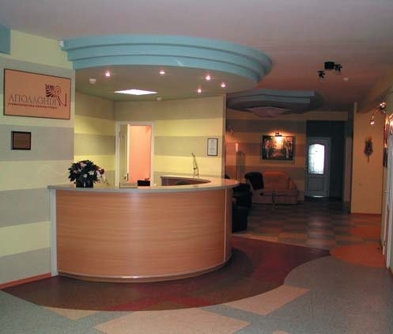
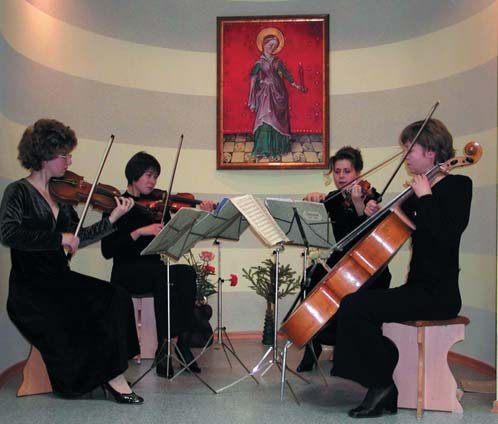
Ми дуже цінуємо тих пацієнтів, які з нами 10, 20, 30 років. Коли пацієнти приїжджають на кілька днів для серйозних реставраційних робіт, ми можемо поспілкуватися, співставити свої уподобання в мистецтві, музиці... На звичайному прийомі до цього не доходить.
«Аполлонія» – високоспеціалізована клініка, яка все глибше спеціалізується в галузі прямої реставрації. У всіх кабінетах працюють лікарі, котрі одночасно є і викладачами нашого Навчального центру «Аполлонія». Наталія Савоста, Ксенія Лазарєва, Ольга Пономаренко, Наталія Синицина, Тамара Жуковська, Ірина Кудря досконало володіють методами мінімально інвазивної високоестетичної реставрації і навчають цьому колег з України й інших країн.
У Будинку Аполлонії працює півсотні людей, і праця кожного важлива. Пацієнт бачить лікаря, асистента, працівників реєстратури. Але щоб він почувався комфортно і з результатом, докладають зусиль багато співробітників.
Ми оновили обладнання. Постійно оволодіваємо новими технологіями і матеріалами. Курси, конференції, виїзди в інші міста України і різні країни... Одне слово, розвиваємося...
Загалом, робота стоматологів дуже важка, тому ми у підвалі Будинку Аполлонії обладнали фітнес-центр. Чи сидячи, чи стоячи працюють стоматологи, у них не рухається тіло. Після кількагодинної роботи їм треба «розбігати ноги», зняти навантаження на хребет, розтягнути його. Там є бігова доріжка, орбітрек, шведська стінка, велика надувна куля, килимки для йоги…
– Ви теж там знімаєте фізичну напругу?
– У мене шведська стінка прямо в кабінеті, а інші потрібні вправи я маю можливість робити вдома. Я зобов’язаний дбати про своє здоров’я, як усі стоматологи.
– Перший складник у формулі менеджменту нового покоління: жити, любити, вчитися, залишити слід...
– Саме так.
«Стоматологія майбутнього – це фітнес-стоматологія»
– Сергію Володимировичу, які Ваші прогнози щодо тенденцій розвитку стоматології?
– Багато пишуть про те, що наростає потреба в імплантації, ендодонтії, протезуванні, однак я бачу інші тенденції – відповідно до того, з якими пацієнтами ми зустрічаємося. Раніше це були переважно люди похилого віку, котрі втратили зуби через те, що їхнє власне ставлення до свого здоров’я було недбалим. Стоматологи їм допомагали, хоча у багатьох випадках хотіли, як краще, а виходило, як завжди: коли стоматолог своїми «очумєлимі ручкамі» втручається в ніжну, складну біоінженерну структуру зуба, то потім деградація наростає, як снігова куля. Зуб – це настільки складне творіння природи, що багато його функцій ми не можемо відтворити в принципі. Ми тільки робимо імітацію. Тимчасову. Добре, як на десяток літ.
У стоматології майбутнього роль профілактики має зрости багатократно. Нинішня ситуація, яку я жартівливо окреслюю словами «чим гірше пацієнтові, тим краще стоматологові», не триватиме вічно. Приходять нові покоління, вони завдяки рекламі, кіно розуміють, що зубні щітки і пасти посідають дуже важливе місце в житті. Купують зубні флоси, ополіскувачі, іригатори, зубні щітки електричні... І коли молоді люди починають нормально чистити зуби, тоді карієс і пародонтит відступають. Якщо всі зуби на місці і всі вітальні – потреби в послугах ендодонтистів та імплантологів немає.
– Але ж, окрім карієсу, залишається багато інших проблем – стирання, наприклад...
– На щорічному конгресі Європейської секції Міжнародної колегії стоматологів ICD у Женевському університеті, присвяченому мінімально-інвазивній стоматології, профессор Іво Крейчі сказав «Стоматологія майбутнього – це фітнес-стоматологія!» Стоматолог має бути своєрідним тренером: порадити, навчити, як зберегти зуби здоровими, а не втручатися тоді, коли вони вже зруйновані, як це робили дантисти проминулих часів і ще робимо ми сьогодні. Справді, в перспективі до цього треба готуватися, бо відійдуть покоління з дуже ураженими зубами та тканинами пародонту, а нові покоління будуть значно серйозніше ставитися до особистої гігієни, профілактики стоматологічних захворювань. Ясна річ, їх цьому маємо наполегливо навчати з дитинства, і тут поки що не можемо покладатися лише на батьків.
– Кажуть, нижні щелепи homo sapiens деградують, тож у ортодонтів роботи більшатиме... Чи не нагадуватимуть у майбутньому земляни інопланетян – величезний лоб і маленька нижня частина обличчя, куди 32 зуби аж ніяк не вмістяться?
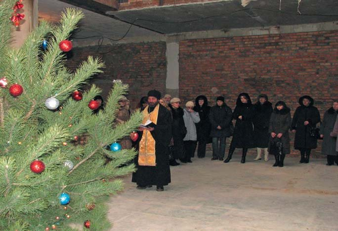
– Ми зустрічаємо пацієнтів з первинною адентією, коли зачатка зуба немає взагалі. Первинній адентії піддаються ті зуби, які функціонально менш активні. Але я дуже змінив свою думку про беззубість людини майбутнього, коли відкрив для себе зубні ряди прадавніх людей. У Грузії, в Національному музеї у Тбілісі, я разом з моїми друзями професорами Зурабом Вадачкорією і Мариною Мамаладзе з дозволу міністра культури зміг доторкнутися до двох артефактів – щелеп так званого homo dmanisi. У горах є місто Дманісі, там знайшли 4 нижні щелепи і 5 черепів, вік яких, підтверджений і вченими з Пенсильванського університету, становить 1,8 мільйона років. Розглядаємо ці дивовижні знахідки. Черепна коробка для мозку мала об’єм, як середній апельсин. Щелепи, навпаки, потужніші, ніж у сучасної людини, бо більшим було навантаження. Але зуби... Вони нічим не відрізняються від тих, з якими ми сьогодні маємо справу: 4 різці, 2 ікла, по 2 премоляри і 3 моляри... Найбільший 6-ий зуб, 7-ий менший, найменший 8-ий. У зуба 6, нижнього першого моляра, 3 щічних горбики. У зуба 5, другого премоляра, 3 горбики (два язичних). Отже, у тих прадавніх людей, що належали до австралопітеків, homo erectus, таких несхожих на нас, зуби в принципі не відрізняються від зубів сучасної людини. Генетична програма продовжує діяти. Якщо за 2 мільйони років форма, кількість зубів, форма дуги, позиція зубів, співвідношення зубних рядів які були, такі й залишаються, то я впевнений, що і через 2 мільйони років зуби залишатимуться на місці.
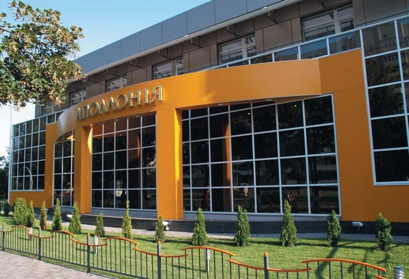
«Готуймося до світлих часів!»
– Вас заслужено називають маестро стоматології, у Вас сотні учнів в Україні і за її межами. Ви романтик, художник за натурою. Але така клініка, Навчальний центр – це ще й бізнес-структура. Як Ви з цим упоруєтеся?
– Знаю багатьох відомих стоматологів, які через потребу керувати бізнесом перестали працювати як лікарі. Бізнес з’їдає спеціаліста. Він вимагає часу, уваги, комунікацій. Тому я щасливий, що в цих справах можу покластися і на директора клініки-студії «Аполлонія» Наталію Синіцину, на дружину і партнера Віру Радлінську, яка керує навчальним центром, і на сина Миколу, який організовує курси, на всіх співробітників, від зусиль яких залежить функціонування нашої клініки як бізнес-структури. Хоча як власник бізнесу, як лідер я маю вникати в стан справ. Але коли? Тоді, коли не спілкуюся з пацієнтами. У нас у клініці немає щоденного фінансового плану, лікарі не мають завдань прийняти стільки-то пацієнтів за день, тиждень. Є лише один план – задовольнити потреби пацієнтів, усвідомлені й неусвідомлені (бо не всі пацієнти знають, чого вони потребують насправді), і стабілізувати їхнє стоматологічне здоров’я. Якщо це буде метою, то гроші у клініці завжди будуть, вона буде успішною. Фінансовий бік – це калькуляція, що ми комусь потрібні, що ми робимо добру справу. Пацієнти про нас розповідають іншим, приходять інші люди, які потребують естетичних мініінвазивних реставрацій.
Нині принцип розподілу функцій фінансового управління і керівництва лікувальним процесом узаконений, у кожному закладі охорони здоров’я мають бути директор і головний лікар. А ми посаду директора ввели ще 20 років тому, і відтоді на ній самовіддано працює Наталія Андріївна Синіцина. Якщо духовним лідером колективу називають мене, то Віра Миколаївна Радлінська – лідер натхнення і навчання.
– Ваші побажання колегам...
– Готуватися до світлих часів, коли для стоматолога не залишиться іншої роботи, як бути тренером у здоров’ї, гігієні. Маємо підготувати себе до цього і знати, що робитимемо.
До речі, там, у сфері гігієни, лежить найбільше грошей. Тільки люди поки що готові платити за імплантати, за протези, кераміку, пломби, лікування запалення ясен, а за гігієну – кажуть, дорого, та ні, обійдусь. Однак ситуація змінюється, що засвідчують багатомільярдні обороти тих фірм, які продукують засоби гігієни. Якщо імплантати, умовно кажучи, потрібні одиницям, котрі можуть за це заплатити, якщо кераміка потрібна десяткам, а реставрація – сотням, то гігієна потрібна абсолютно всім. І це єдине поле, де лікар і пацієнт мають спільні інтереси. Якщо тільки пацієнт згоден буде платити за здоров’я. Поки що він своє здоров’я спочатку втрачає, а потім платить за те, щоб його стабілізувати.
Але я вірю, що парадигма «чим гірше пацієнтові, тим краще стоматологові» таки зміниться на прямо протилежну: чим здоровіші зуби пацієнта, тим краще стоматологові!
– Дякую за розмову! І дай Боже, щоб під час наступної ювілейної зустрічі ми вже побачили паростки тієї стоматології майбутнього – фітнес-стоматології...
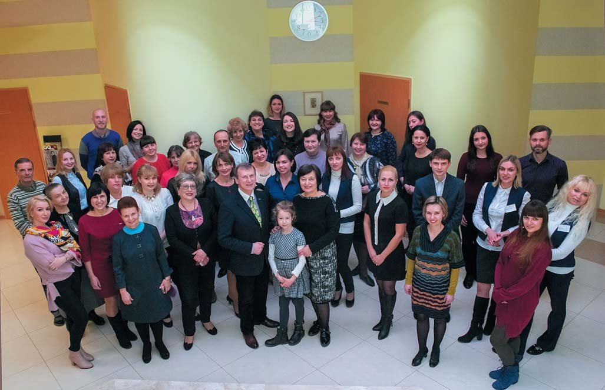
Розмовляла Ганна Антипович
Фото з архіву клініки-студії «Аполлонія»